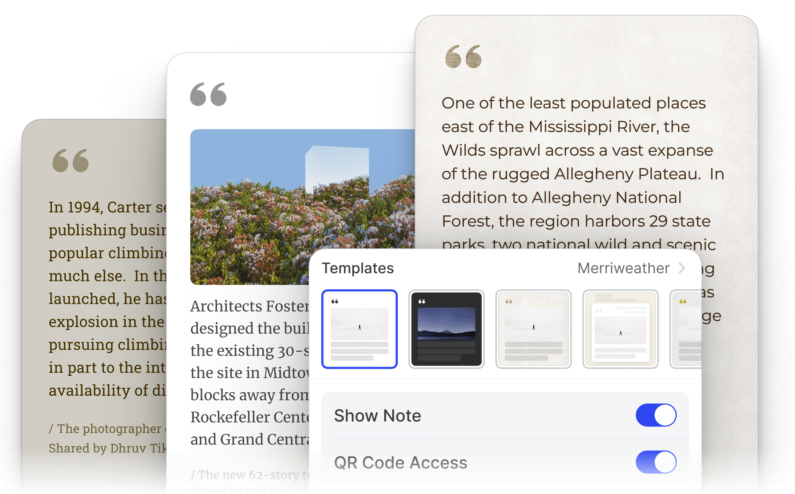
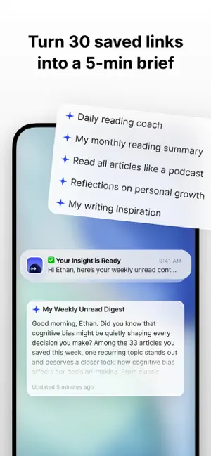

Cubox 深度盘点：从收藏到沉淀，一款稍后阅读工具的完整能力地图
把 Cubox 的收藏入库、沉浸阅读、高亮标注、搜索找回、AI 助手和输出互通六大能力域逐一拆开，看看它到底解决哪些信息管理痛点，又有什么局限。
Cubox 的官网上能看到，它在中文互联网的稍后阅读工具里不是最有名的那个，但它可能是野心最大的一个。从第一次用分享菜单把网页存进去，到一周后翻起上周收藏的文章，它想做的从来不是「存一下 URL」——而是把你散落在各 App 的信息收回来，整理、标注、消化，最后变成可复用的素材。这篇盘点就从这个定位出发，把它现有的能力面完整铺开，帮你判断它是不是适合你信息管理习惯的那一个。感兴趣的话安装包从官方下载就能拿到。
收藏入库：一条覆盖全场景的动线
收藏工具的第一关永远是「怎么存进去」。如果收藏这一步比找收藏功能还麻烦，后面再好的体验都白搭。Cubox 把这条动线压得相当短。
手机端的核心是系统分享菜单——任何 App 里看到想存的内容，点分享、选 Cubox，几秒后内容就躺在你的库里了。Safari 的文章、资讯客户端的报道、视频平台的作品、社交媒体的帖子，全走这一条路。更进一步的优化是把分享列表里的 Cubox 固定到前排，iOS 用编辑模式、安卓用长按置顶，做完之后收藏耗时从「找图标十秒」缩到「点一下一秒」。
不同内容类型的入库处理也有差异。文章类整页存入，云端自动做正文解析，之后在阅读视图里是清爽的排版；图片入库时顺带做文字识别，图里的字日后可以全文搜索；视频和语音存的是链接，微信场景里甚至能把语音转成文本再检索。复制了一段纯文字想单独存也不难，部分客户端支持直接从剪贴板内容创建卡片。
微信公众号是中文用户最重度的收藏场景。Cubox 专门做了一个微信转发收藏通道，比系统分享菜单还省一步——绑定账号之后，把公众号文章直接转发给它的微信助手，文章自动入库。这条动线的设计初衷是：不让「我想存一下」这个念头在切 App 的过程中冷却掉。
沉浸阅读：让存量内容真的被消费
存了一堆但从来不看，是稍后阅读工具用户的普遍困境。Cubox 的沉浸阅读模式就是冲着这个来的。
入库后的网页会被解析成干净的阅读视图，去掉广告、导航栏、推荐位这些干扰项，只留下正文和配图。排版上支持多种阅读风格切换，衬线、无衬线、深色、浅色各有偏好。配合 swipe 翻页手势，刷收藏的体验接近原生阅读器。卡片视图则把所有收藏排成一列，左滑右滑切换，比一条条点进去更适合批量消费。
阅读视图里还有一个细节值得注意：它建立在快照和正文解析的双重保障上。原文站点挂了、文章被删了、页面结构改了，你当时标注的内容和想法不会跟着消失。这一点在频繁清理旧文章的资讯类站点上特别实用。
高亮与笔记：把读过变成思考
收藏的终极目的不是存档，而是沉淀。Cubox 在高亮标注这一层做得比大多数同类产品都深。
阅读时选中一段文字，弹出工具条选颜色即完成标记，再补一条笔记就把当时的想法挂在了高亮上。标注是这个产品里思考沉淀的最小单元——不是「划重点」那么简单，而是让每一次阅读都至少产出一点东西。
多色高亮不是花架子，而是一套隐形的分类系统。官方推荐的颜色分工大致是：黄色记事实与数据、绿色记观点与论证、蓝色记待查证或不懂的地方、红色记强烈认同或反对。三五种颜色用出稳定习惯之后，按颜色过滤标注就能直接产出写作素材，这是 Cubox 和纯高亮插件最大的区别。
标注的输出路径也多。可以做成设计好的图片卡片，选一个衬线文艺款或深色极简款模板，把出处、摘录、你的笔记拼成一张可直接转发的图——读书会、内容创作配图、团队内部分享都能用。标注也可以批量导出进笔记系统，作为写作素材的原始资料库。免费版每篇限 3 个标注，重度需求要上 Pro 会员。

搜索找回：从全文到多模态
存了一年的收藏怎么找回来，是信息管理工具的核心考验。Cubox 的搜索能力是它另一个被低估的地方。
基础搜索覆盖标题、正文、标签和你写过的笔记，关键词命中后按相关度排序。进阶的多模态搜索则把入库时解析出来的一切都纳入索引：图片里识别到的文字、语音转写后的文本、视频里的字幕片段——只要内容里出现过，搜关键词就能把那条收藏捞出来。
这套搜索在信息入口高度碎片化的今天特别有价值。当你的资料同时来自公众号文章、微博帖子、视频讲解、朋友发的语音转文字，传统的「按来源分类」已经管不住了，全文搜索才是兜底。更细的搜索语法和筛选技巧可以在cubox文档里翻到。
AI 阅读助手：替你先读一遍
存得太多读不过来怎么办？Cubox 在 AI 这一层下了重注。
AI 解读功能会对每篇入库内容先生成一份摘要，再提炼几条关键要点。这意味着你可以用五分钟过一遍今天新收藏的内容，挑出值得精读的那几篇。AI 简报（AI Brief）则是周期性的汇总，按照你设定的节奏把最近收藏里的重点内容整理成一份简报，适合每周回顾。

AI 助手能不能替代你真正读一遍？肯定不能。但在「快速筛选、决定哪些值得花时间」这个环节，它能帮你省下大量决策成本。目前 AI 相关功能基本依赖云端处理，对网络环境敏感。
输出与互通：不把你锁在里面
收藏工具的另一个风险是锁定——数据出不来就等于被绑架。Cubox 在输出这边做得相对开放。
支持导出 Markdown、HTML 和 PDF 三种格式，批量导出时按文件夹或标签分组。阅读清单功能可以把一组主题相关的收藏做成公开页，分享给团队或社群。浏览器扩展支持一键入库和快捷操作，多端同步也覆盖了 iOS、Android、桌面端和 Web。
但互通的范围也有边界。和 Pocket、Instapaper 之间有一键迁移工具，这是对新用户友好的信号；但和 Obsidian、Notion 等笔记工具之间还没有深度集成，导出之后需要自己再导入。
短板也要说
盘点做到这里，得客观地说 Cubox 还缺什么。
首先，它不做内容发现。所有内容都来自你主动收藏的东西，不会像 Newsletter 客户端或资讯聚合器那样给你推荐。这对已经有稳定信息源的人不是问题，但对想靠工具帮自己拓展知识面的人来说，它帮不上忙。
其次，团队协作能力还在早期。标注分享卡片和阅读清单可以对外分享，但多人协作编辑、共同维护一个知识库这些功能还没有。当前定位主要是个人信息管理。
第三，分类体系偏重标签，文件夹的组织能力相对弱化。对于需要严格按项目分块管理资料的用户来说，标签能解决大部分问题但不是全部。
免费版和付费版的差距也得提一下。免费版每篇 3 个标注、每月有限的 AI 调用次数，重度标注和依赖 AI 简报的用户迟早会碰天花板。
什么样的人该用它
最后收个画像。Cubox 适合以下几类人：
每天被多端信息轰炸的内容消费者：公众号、微博、知乎、视频平台到处都是想存的东西，需要一个统一入口把它们收回来。对他们来说，Cubox 不是另一个收藏夹，而是把散落的信息重新汇聚起来的容器。
有写作或创作习惯的知识工作者：从收藏、标注、整理到最终输出的这条链路在 Cubox 里是连贯的。高亮的颜色分类系统就是一套半成品的素材组织方式，导出 Markdown 直接进写作工具。
深度阅读爱好者：收藏之后真的会回头读，甚至会在阅读时做标注、写想法、定期回顾。Cubox 为这整条消费-沉淀链路做了设计，不是只为「存一下」设计的。
如果你只是偶尔存一两个网址从不回头翻，浏览器自带书签就够了。如果你要的是发现新内容，它的定位从一开始就不在这边。选型时也可以把它和 Pocket、Instapaper 摆在一起比一比再决定。
资料来源
这套整理覆盖了 Cubox 从收藏到沉淀的完整流程。文档维护和更新同时发布在GitHub、Gitee和GitCode，方便不同网络环境下查阅。